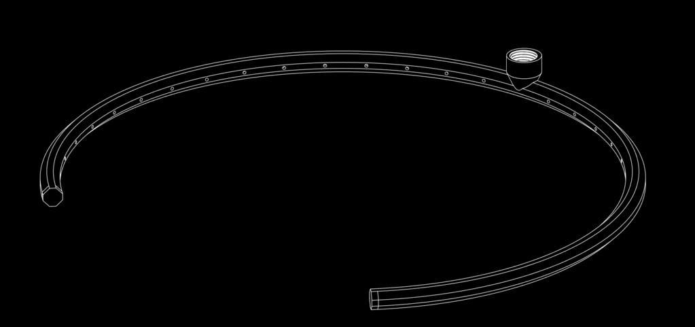
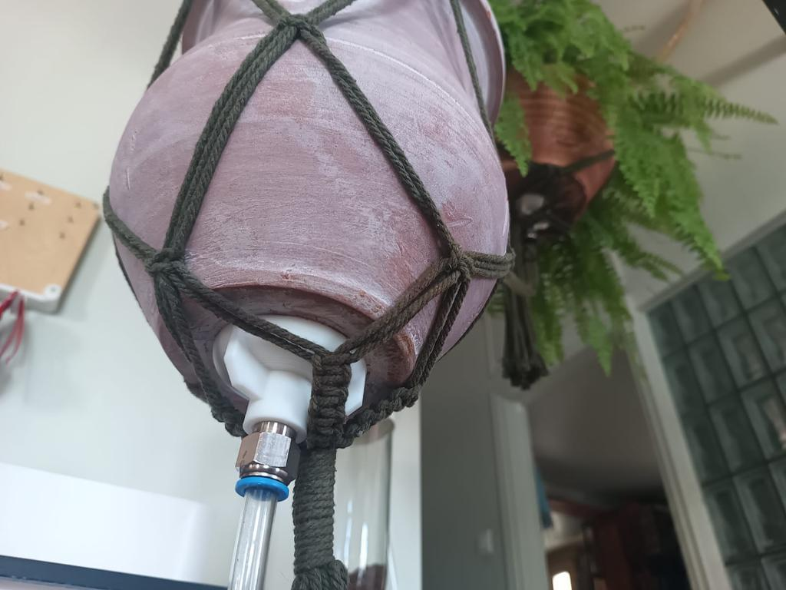
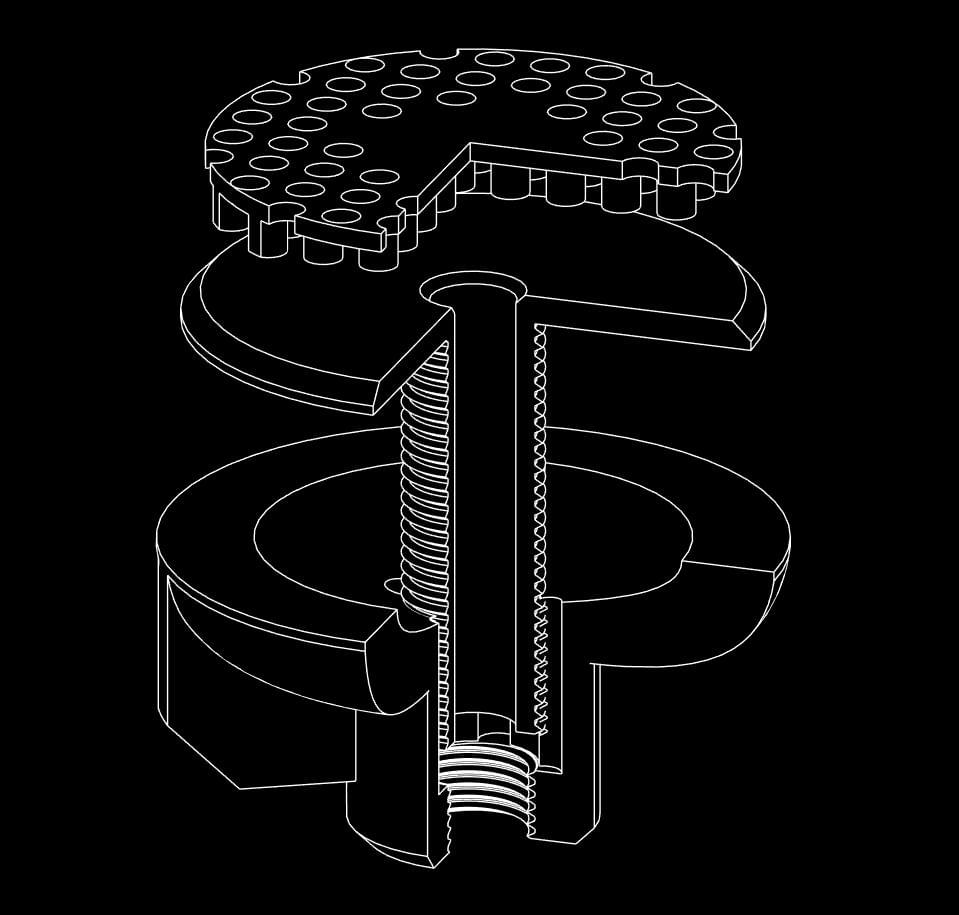
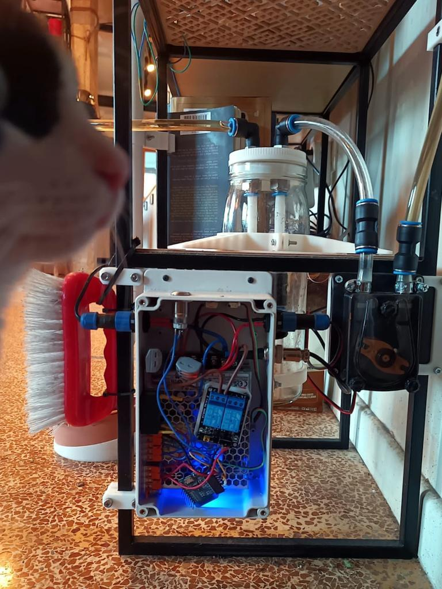

Auto WateringIndividual Plant Pot |
Version | v0.1 alpha | |
|---|---|---|---|
| Created | |||
| Author | Ivan Nikolic | Updated | [2024-12-02 Mon] |
This document describes all elements of the pot.
Every element here is optional.
For example:
┌─────┐┌───────────┐ │Power││Water │ └┬────┘└──────────┬┘ ┌▽──────────────┐┌▽─────┐ │Moisture Sensor││Nozzle│ └┬──────────────┘└┬─────┘ ┌▽────────────────▽┐ │Plant │ └┬─────────────────┘ ┌▽──────────┐ │Drain Water│ └───────────┘
Pots are networked using central power/supply/drain pipeline

Any design will work here, stadard watering nozzles like gardena fit into 6mm hoses as well.

I just leave this in a pot, would be nice to design some spikes that hold this thing in the soil
If you have a moisture sensor you can ensure your pot never gets overwatered so you might not need a drain. I find pots with drainage more chill as you can safely overwater, but they are not chill to build.
Goal here was to design an outlet that doesn't require a watertight seal since this is difficult and unreliable long term.

We use a bottom convex element to capture water flowing around the screw, though we expect the bulk of water to flow through it.

┌───────────┐ │Soil Filter│ └┬──────────┘ ┌▽─────────────┐ │In-pot element│ └┬─────────────┘ ┌▽────────────────────┐ │Bottom convex element│ └┬────────────────────┘ ┌▽───────────────────┐ │12mm push in fitting│ └────────────────────┘
Prevents large chunks of soil from entering the outlet tube.
This is probably annoying to print for most people and a random rock, fine netting, a sponge etc is ok for this as well.
Gives you a screw on the other side. You can adjust a height of this according to your pot bottom thickness
I sometimes print this in full size and break it off to size after fitting.
If your pot bottom is especially coarse you want to add sillicone where it connects to the pot to limit the flow, (you won't prevent it, especially long term, but this is what bottom element is made to capture)
Captures water that might leak from the sides of the screw. Provides a connection for a push-in fitting.
This module detects water in the dumping container and engages the pump to pressurize it so that it can be moved to drainage
Control box takes power input, sensor input and provides pump output
Pump control circuit used will depend on the pump voltage and power, relays will always work, something like TIP120 is great for DC > 5A pumps
Sensor circuit depends on your sensor this one is really nice but float switches, load cells etc will work just as well.
┌───────────────────┐┌─────┐ │unpressurized_drain││power│ └┬──────────────────┘└┬────┘ ┌▽────────┐ │ │container│ │ └┬─┬──────┘ │ │┌▽─────┐ │ ││sensor│ │ │└┬─────┘ │ │┌▽──────────────────▽┐ ││controller │ │└┬───────────────────┘ ┌▽─▽─┐ │pump│ └┬───┘ ┌▽────────────────┐ │pressurized_drain│ └─────────────────┘
